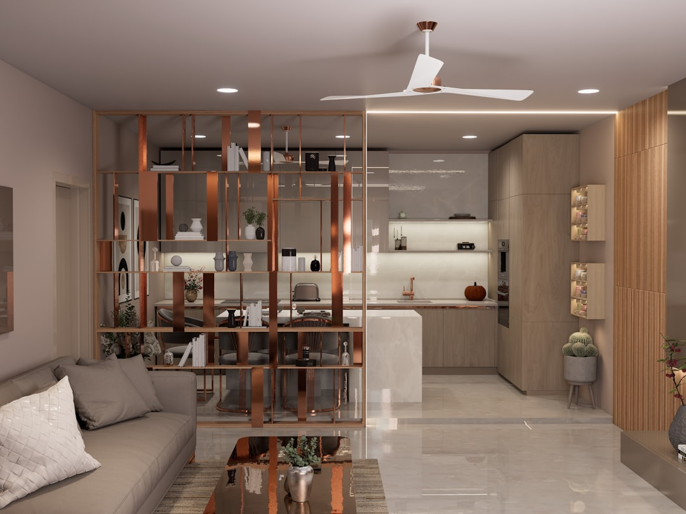

A small kitchen facelift in Adelaide, replacing doors, benchtops, and splashbacks without moving walls or plumbing, typically costs less than a full rebuild and completes faster. Quotes from vetted renovators in the Adelaide network generally start from around $8,000 depending on scope and materials. Skipping layout changes reduces the need for trade coordination and council approvals, making this route popular with budget-conscious homeowners.
For local buyers, small kitchen renovations adelaide is one of the fastest ways to lift a tired kitchen without the disruption of a full rebuild.
Small Kitchen Renovations Adelaide Explained
Not every kitchen upgrade involves pulling out walls or relocating the sink. A cosmetic update, often called a kitchen facelift, targets the surfaces and fittings that age fastest while leaving the existing layout intact. Common scope items include replacement cabinet doors and drawer fronts, new benchtops in stone or engineered surfaces, a fresh splashback in glass or tile, and updated handles and tapware.
This approach suits kitchens where the bones are sound: carcasses are still square, plumbing is in a sensible position, and the layout works for the household. Kitchen Renovation Adelaide describes this as one of its six core service areas, specifically for projects where the existing layout stays and doors, benchtops, splashbacks, and handles are replaced.
Because no walls move and no services are relocated, this scope rarely triggers the building approval pathway under the Planning and Design Code. Any electrical or plumbing work still needs a licensed trade, and your renovator should confirm what applies to your specific property.
Who this guide applies to
This guide is written for Adelaide homeowners who:
- have a functional kitchen layout they want to keep
- are working within a tighter budget than a full remodel requires
- want a faster turnaround, often weeks rather than months of disruption
- rent a property and are considering a cosmetic refresh to improve rental appeal
- own a heritage inner-suburb home where layout changes would be complex or expensive
It is not aimed at households planning open-plan conversions, butler's pantry additions, or full layout redesigns. For broader scope projects, the Adelaide kitchen renovations guide covers the full range of remodel types including structural work and trade coordination across multiple disciplines.
Choosing materials for a facelift
Material selection drives both cost and longevity. For cabinet doors, common options include vinyl-wrapped polyurethane (durable, moisture-resistant), two-pack painted timber (premium finish, harder to repair), and flat-pack systems (lower cost, faster lead times). The right choice depends on your existing carcass dimensions and the finish level you want.
Engineered stone benchtops are templated and fabricated to fit your existing run, keeping installation time short. Laminate is a cost-effective alternative, though it is less resistant to heat and knife marks. Natural stone adds character but requires sealing.
Splashbacks can be replaced independently of the benchtop. Tiled splashbacks allow for pattern and texture; glass splashbacks are easy to clean and suit a minimalist look. Both can be installed around existing plumbing penetrations without a plumber if the tap position is unchanged.
Cost and timeline: what to expect
Because this scope avoids structural and plumbing changes, costs sit below a full kitchen renovation. Savings come from fewer trades, shorter on-site time, and lower material volumes.
A full kitchen renovation in the Adelaide network typically runs 8 to 14 weeks end to end. A facelift scope, where carcasses stay and no plumbing is moved, can run significantly faster once materials are on order. Lead times for doors and benchtops are the main variable, particularly for custom finishes.
When comparing quotes, check whether the figure includes removal and disposal of existing surfaces, templating for the new benchtop, and any tiling labour. These are sometimes listed separately.
Finding a vetted renovator in Adelaide
For small kitchen renovations adelaide projects, the licensing requirements are the same as for larger work. Any tradesperson doing electrical or plumbing work must hold the appropriate licence through Consumer and Business Services in South Australia. Cabinet makers should have demonstrable experience with the system they are fitting.
Industry body membership, such as accreditation with Master Builders South Australia or operating to Housing Industry Association standards, gives an independent reference point for quality and conduct. These are not mandatory but indicate a builder who participates in industry standards.
Getting multiple quotes lets you compare scope breakdowns side by side, not just the bottom line. A lower figure that excludes templating, tiling, or disposal can cost more once those are added back.
- Assess the carcasses. Check that existing cabinet carcasses are square, level, and free of moisture damage before ordering replacement doors.
- Measure and template. Have a stonemason template the existing benchtop run before fabrication begins, as small measurement errors lead to costly on-site cuts.
- Confirm material lead times. Lock in lead times for doors, benchtops, and splashbacks before booking trades, as delays in one material hold up all subsequent steps.
- Sequence the trades. Complete electrical or plumbing work before the new benchtop and splashback are installed, since accessing services afterwards requires removing finished surfaces.
- Inspect before final payment. Walk through the finished work with your renovator before signing off, checking door alignment, benchtop joins, and splashback grout lines.
| Factor | Kitchen facelift | Full renovation |
|---|---|---|
| Layout change | No | Yes, often |
| Plumbing relocation | Not required | Common |
| Trades involved | Cabinet installer, stonemason | Electrician, plumber, tiler, stonemason, cabinet maker |
| Typical disruption | Lower, shorter on-site time | Higher, 8 to 14 weeks end to end |
| Approval pathway | Usually not triggered | May apply depending on scope |
| Cost range | Lower than full rebuild | Quotes from around $8,000 to $80,000+ |
Common questions
Do I need council approval for a kitchen facelift in Adelaide? Replacing doors, benchtops, and splashbacks without moving walls or relocating plumbing typically does not trigger the building approval pathway under the Planning and Design Code. However, any electrical or plumbing work still requires a licensed trade, and it is worth confirming with your renovator what applies to your specific property and suburb.
How long does a small kitchen renovation take in Adelaide? A facelift scope can run significantly faster than a full renovation. The main variable is material lead time for doors and benchtops. On-site installation, once materials arrive, is often completed within a few days for a standard-sized kitchen.
Can I replace just the benchtop without changing the doors? Yes. Benchtop replacement is a standalone scope item. A stonemason templates the existing run, fabricates the new surface, and installs it without requiring door or carcass changes, though the junction between old doors and a new benchtop edge profile may look inconsistent depending on the original fit-out.
What is the difference between a kitchen facelift and a full renovation? A facelift keeps the existing layout, carcasses, and service positions intact, replacing only visible surfaces and fittings. A full renovation may involve moving plumbing, changing the layout, or structural changes such as opening a wall.
How do I compare quotes for a facelift project? Ask each quote to itemise door supply and installation, benchtop templating and fabrication, splashback supply and labour, and disposal of existing surfaces. A lower headline figure that excludes these items may cost more once added back.
This guide covers cosmetic kitchen updates in Adelaide, including door, benchtop, and splashback replacement for homeowners who want to refresh their kitchen without changing the existing layout.